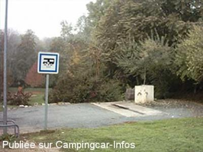

AS = Aire de services uniquement de :
MELLE
(N° 382)
Accès/adresse :
Route de Villiers
79500 MELLE
79500 MELLE
Latitude : (Nord) 46.23145° Décimaux ou 46° 13′ 53′′
Longitude : (Ouest) -0.14402° Décimaux ou 0° 8′ 38′′
Tarif : Gratuit
Type de borne : Artisanale
Services :


Tous commerces
Autres informations :
Borne accessible d'avril à novembre pas de stationnement
Tel : +33 (0) 549 270 023
http://www.ville-melle.fr
Stationnements:
Parking du jardin
Parking Haut de Saint Hilaire
Parking des Mines

Le 07/04/2007 par
de
jym17
le 19/05/2012 :
bonjour
Il existe un parking,réservé, rue des Champs, juste aprés le cimetiére à environ 500m de la borne, direction centre ville; difficile d'accés pour un cc de plus de 6m, sinon, stationnement en centre ville, pres de l'ancienne gare,
bonjour
Il existe un parking,réservé, rue des Champs, juste aprés le cimetiére à environ 500m de la borne, direction centre ville; difficile d'accés pour un cc de plus de 6m, sinon, stationnement en centre ville, pres de l'ancienne gare,
de
Jean-Paul
le 14/08/2009 :
Aire très bien équipée mais dommage que l'on ne puisse stationner. Le camping municipal, juste en face est très sympa.
Aire très bien équipée mais dommage que l'on ne puisse stationner. Le camping municipal, juste en face est très sympa.
de
monique
le 10/12/2007 :
Ne pas oublier d'aller visiter la mine d'argent: excellent accueil, parking, sentiers pédestres
Ne pas oublier d'aller visiter la mine d'argent: excellent accueil, parking, sentiers pédestres
de
campingcar.jjbo.freesurf.fr
le 20/01/2005 :
J'ai rajouté la photo de l'aire de jeux. A 300m de cette aire de repos très calme, se trouve un parc arboretum. A noter qu'en cette saison, le point d'eau est mis hors service.
J'ai rajouté la photo de l'aire de jeux. A 300m de cette aire de repos très calme, se trouve un parc arboretum. A noter qu'en cette saison, le point d'eau est mis hors service.
de
nelro
le 18/11/2003 :
Cette aire offre les services nécessaires. En contre bas, il y a une belle aire de jeux pour les enfants.
Cette aire offre les services nécessaires. En contre bas, il y a une belle aire de jeux pour les enfants.